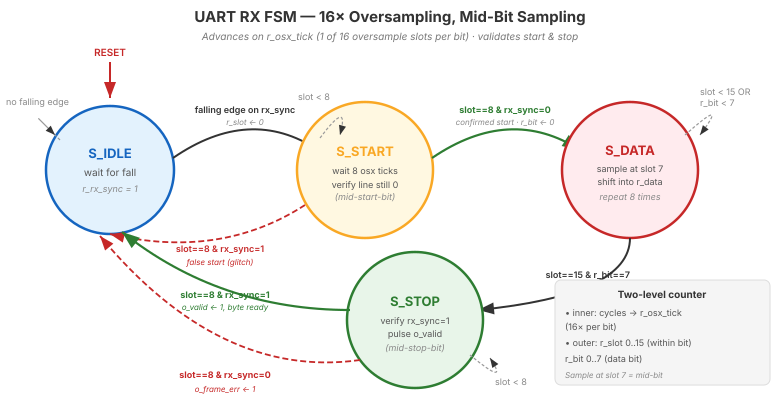

Video 2 of 4 · ~12 minutes
Dr. Mike Borowczak · Electrical & Computer Engineering · CECS · UCF
Every server, router, and embedded Linux system has a UART console. The console is read (RX) and written (TX) by firmware. Debugging a hung kernel? Hook up a USB-UART adapter to the board's RX pin and capture the panic message. Industrial equipment uses UART RX to receive configuration from SCADA systems. Satellite modems use UART-like receivers with Forward Error Correction on top. The RX side of serial is where the system listens to the world.
Today you build the RX module. Pair it with yesterday's TX and you have full-duplex. A loopback test lets you verify: your laptop types, board receives, board echoes, laptop sees it. That's the end-to-end pipeline — and the platform for every capstone project that needs two-way communication.
“Single counter that increments every cycle and wraps every CLKS_PER_BIT. Sample on wrap.”
Use a two-level counter hierarchy. Inner counter counts CLKS_PER_OSX cycles and pulses r_osx_tick. Outer counter counts r_osx_ticks (0..15 for oversample slots, then 0..7 for data bits). This decouples the logical structure (16 slots per bit, 8 bits per byte) from the physical clock rate. Lets you change baud rate by changing one parameter.
| State | Action | Exit |
|---|---|---|
S_IDLE | Wait for start-bit falling edge on r_rx_sync | Edge detected → S_START |
S_START | Wait 8 oversample ticks (to mid-start-bit), verify line still LOW | Line still 0 → S_DATA; Line 1 → false start → S_IDLE |
S_DATA | Wait 16 osx ticks, sample r_rx_sync, shift into byte. Repeat 8 times. | 8 bits sampled → S_STOP |
S_STOP | Wait 16 osx ticks to mid-stop-bit, verify HIGH, assert o_valid for 1 cycle | → S_IDLE |
S_START has that “verify still low” check — critical for rejecting line glitches. S_STOP's “verify high” check detects framing errors (bad bytes). Everything proceeds on oversample ticks, which happen every ~13.5 cycles at 115200 baud.

S_START rejects glitches that aren't a real start bit. The red dashed arrow out of S_STOP raises o_frame_err when the stop bit isn't HIGH (baud mismatch / line noise). Everything advances on r_osx_tick, not the system clock.
// Oversample generator
reg [$clog2(CLKS_PER_OSX)-1:0] r_osx_cnt;
reg r_osx_tick;
always @(posedge i_clk) begin
r_osx_tick <= 1'b0;
if (r_osx_cnt == CLKS_PER_OSX-1) begin
r_osx_cnt <= 0;
r_osx_tick <= 1'b1; // 1-cycle pulse every CLKS_PER_OSX
end else r_osx_cnt <= r_osx_cnt + 1;
end
// Main FSM, advances on r_osx_tick
reg [3:0] r_slot; // 0..15 within current bit
reg [2:0] r_bit; // 0..7 data bit index
reg [7:0] r_data;
// ...
S_DATA: if (r_osx_tick) begin
if (r_slot == 4'd7) r_data <= {r_rx_sync, r_data[7:1]}; // sample at slot 8
if (r_slot == 4'd15) begin
r_slot <= 0;
if (r_bit == 3'd7) r_state <= S_STOP;
else r_bit <= r_bit + 1;
end else r_slot <= r_slot + 1;
endr_slot == 7 (after slot 7's tick, at the start of what would be slot 8 — the middle of the bit). Shift the sample into r_data LSB-first by putting the new bit at position 7 and shifting existing bits right. After 16 slots, advance to the next bit. After 8 bits, go to S_STOP.
The PC transmits byte 0x42 ('B' = 01000010) at 115200 baud. Walk through the RX FSM state transitions and the sampled bits (assume CLKS_PER_OSX = 14).
falling_edge pulses → enter S_START, reset r_slot.S_DATA.0_______.10______.o_valid, r_byte = 0x42. Return to IDLE.~7 minutes — full-duplex bringup
▸ COMMANDS
cd lecture_examples/week3_day12/d12_s2_ex1/
make sim # 20 random bytes
make wave
make prog # flash loopback
# in another terminal:
screen /dev/ttyUSB0 115200
# type characters — see them echoed▸ EXPECTED STDOUT
PASS: receive 0x41
PASS: receive 0x42
...
PASS: framing error detect
=== 24 passed, 0 failed ===
Terminal echo working:
user types 'x' → sees 'x'
(with ~90us round-trip)▸ THE LOOPBACK
Connect UART RX → (valid/busy handshake) → UART TX on the board. Now whatever you type in the terminal gets received by the FPGA and echoed back. The round-trip is visible in your terminal. Full-duplex working.
A robust UART RX should also report errors:
o_frame_err pulses. Usually indicates baud mismatch or noise.o_valid is consumed → o_overrun latches. Upstream application is too slow.o_break. Some protocols use as a “reset” signal.o_frame_err is the most important — it tells you when your baud rate is off. Latch it for visibility; don't lose transient errors.
Ask AI: “Build a UART RX with 16× oversampling, start-bit glitch rejection, and framing error detection. Include testbench with random bytes and noise injection.”
TASK
AI writes robust UART RX.
BEFORE
Predict: 2-counter hierarchy, 2-FF sync on input, mid-bit validation on START.
AFTER
Strong AI includes noise injection in TB. Weak AI only tests clean inputs.
TAKEAWAY
Testbench quality = RX quality. Always test corrupted inputs.
① Two-level counter: cycles → oversample ticks → bits.
② Sample at slot 7 (mid-bit). Shift into LSB position, then shift right.
③ Validate start bit at slot 8; validate stop bit before emitting byte.
④ Loopback test = complete full-duplex validation.
🔗 Transfer
Video 3 of 4 · ~9 minutes
▸ WHY THIS MATTERS NEXT
UART is universal but slow (typ. 115 kbps). When you need megabits/second to a sensor, SD card, flash memory, or display — you use SPI. Video 3 introduces the second universal serial protocol. By video end, you understand both, and you can pick the right one for any peripheral.